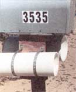
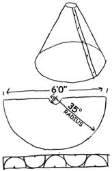

Country Lore
See your way clear to the morning paper.
How many times do you go out to see if your newspaper has been delivered? I go out, unlock the gate, fight to keep the dogs in the yard (we have four), get out to the holder - and nothing.
After about three trips, I get upset. So I decided to build a newspaper holder to eliminate stress.
Wanting to maintain my nickname, Cheap-o-Bob, I went over to my garage (my wife calls it a firetrap) to see what I had on hand. I found a pieceof old six-inch PVC water main, a piece of Plexiglas, and a roll of plumber's strap.
I cut the PVC pipe 16 to 18 inches long. Then I cut a circle out of the Plexiglas to fit over the end ofthe PVC pipe and cemented it on with PVC cement or silicon rubber. I mounted the pipe on a board with two plumber's straps and drilled a hole in the bottom of the closed end to let rain out.
From my living room window, I can look right through the holder to see my paper. For larger Sunday papers, use eight-inch PVC pipe.
- Bob Jackson
Golden Valley, AZ
Recycling Is Reusing
Here are some of my favorite tips:
Use old panty hose when you move. They are great for keeping the leaves from banging on tables, keeping drawers in dressers, and anchoring items in a truck. Don't throw out your windshield wiper blades. Use a sharp knife or razor blade to cut off the cracked and dry portions. But be careful not to cut off too much of the blade, or the metal guard behind the rubber may scratch your windshield if the blades get too thin. Recycle your used greeting cards. Glue the pages together and use them whole or cut out your favorite designs. Punch a hole in them, add ribbon, and use them as gift tags for packages.
-Jessica Cramer
Green Bay, WI
Kitties in the Bush
Re: "Cat Litter Can" ["Country Lore," March 1996]. Indeed there are many uses for cat litter, but you should be very careful where you use litter. I put cat litter on my steps during a snowstorm for traction and later swept it into the bushes. Unfortunately, it drew cats to my house to try out the new neighborhood...facilities.
- Rita O' Sullivan
Midlothian, VA
Old-Fashioned Baby Powder
When my daughter
Jessica suffered from diaper rash, I tried several over-the-counter and prescription medications but none of them seemed to help.
One day I left Jessica with an older woman who had raised three daughters. I told her about Jessica's rash and the pharmacy ointment I was using to treat it.
While I was gone, she "cooked up" her own diaper rash remedy. By the time I returned, the mystery powder was already healing the tender area. What was it? White flour browned slowly in a skillet!
- Karen Ann Bland
Gove, KS
Homemade Oil Tank Detergent
Here's how to clean oil out of an old tank.
First, paint the tank black and put it in the sun with the drain hole at the lowest point (over a container, of course). The solar heat will thin the oil and in a few days most will be out. Then put in about 100 pounds of gravel, a pint of Dawn dishwashing detergent, and five or ten gallons of water.
For the next few weeks, roll it all over the place for exercise. (My kids learned to walk on our 500-gallon tank.) Then, drain the container. Wiggle it around and get all the gravel out. Hoist it in the pickup and take to the nearest coin-op car wash. Soap, then rinse, getting the wand everywhere you can. (Removing any extra plugs in the tank helps.) Take home, fill, and drain till you're bored with it. Fill one more time and use the water on a few test plants. If it doesn't hurt them, then you're probably OK. If there's damage, start over at the gravel stage.
There is no way to do this without some release of petroleum into the environment. Good stewardship requires you to keep it to any amount less than the pollution caused by the manufacture, delivery, and acquisition of a new tank.
-John Walker
Otley, IA
Sunlite Solar Cones
About five years ago I came up with the idea of building my own solar cones. These cones allow the gardener to start plants earlier in the spring. They are not very hard to build and cost very little.
The material I used to construct the 35-inch cone is three feet wide and .04 inches thick. It is called Sunlite [see the February/ March 1995 issue for more Sunlite solar cone designs] and is a brand of fiberglass-reinforced plastic sheeting available at most hardware stores.
You can build cones in different sizes from different widths of fiberglass. Staggering cone patterns on a sheet of Sunlite wastes the least material. I start by making a paper pattern [see design]. I draw the cone on the fiberglass sheet with a marking pen. Cut it out, using a saber saw, drill the holes, and file the edges smooth with sandpaper. This cone will then become the pattern for subsequent cones.
Once you have the Sunlite cut out, pre-drill the holes for fastening the cones so that when the cone edges are overlapped, the holes align.
To assemble, start with the holes at the base of the cone, and slowly squeeze the cone sides together, aligning and fastening each hole on the way up. Use caution on the last hole so as not to crack or craze the edges of the top opening. I have used two different types of fasteners: 3/8-inch long nylon machine screws with hexagonal nuts, and aluminum pop rivets with washers. Both work equally well.
- William Shepherd
Cambridge, OH
Send your tips to "Country Lore," Mother Earth News, P.O. Box 129, Arden, N.C. 28704, or E-mail us at MEarthNews@aol.com . We'll send you a T-shirt, but please remember to include your address, a photo, and a phone number. (Don't worry, we won't give out your number.)
|
 |
|
|
|
 |
|
|